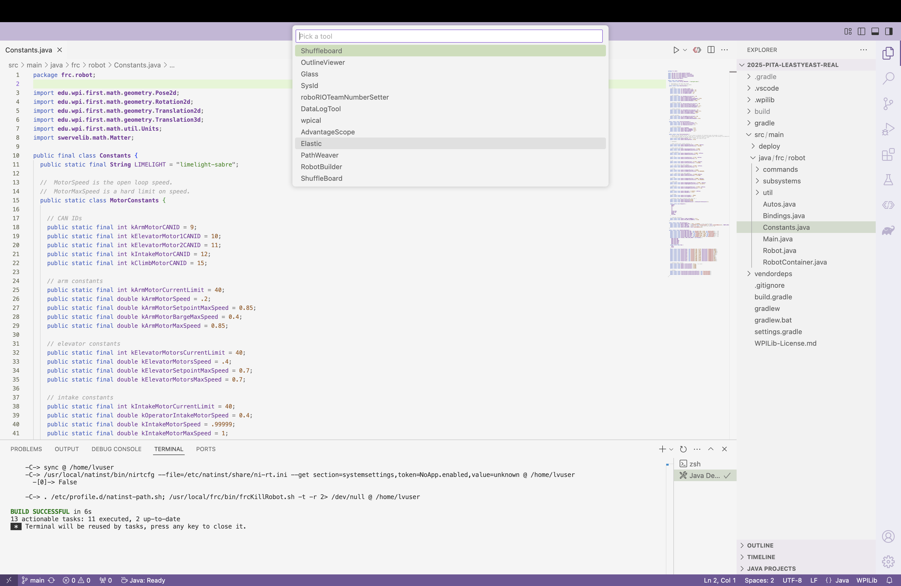
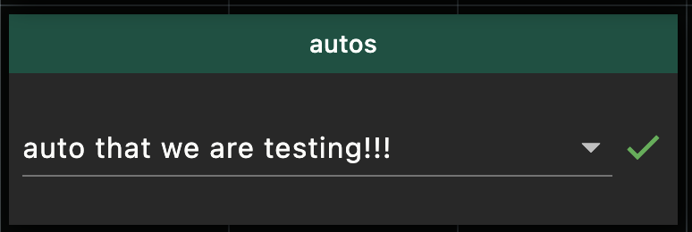
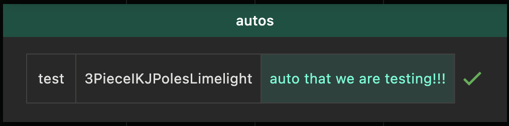

The purpose of this website is to make it easier to find programming-related things that are used or made by FRC 6045.
First, open Elastic. If you have not opened it before, open it through WPILib VS Code as shown in the pictures. Click the WPILib button at the top right of the editor.

Click the line that says “WPILib: Start Tool”.

Click on “Elastic”.

Once Elastic is open, depending on the settings, there are two ways to select the auto. Either way, first connect to the robot. Then, follow the directions that correspond to how the auto selector looks.
If the auto selector looks like this:

Click the arrow and select the auto that you would like to run.
If the auto selector looks like this:

Click on the auto that you would like to run.